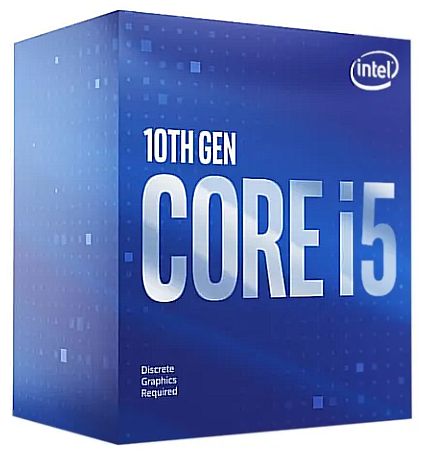
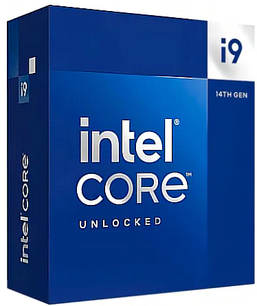
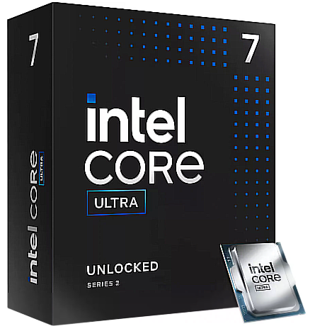
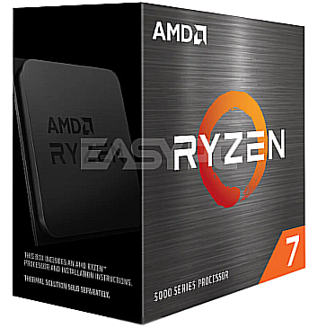
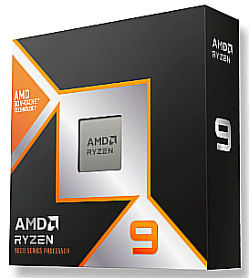

Compatibilidad
Elegí correctamente los componentes según tus necesidades
¿Qué vas a hacer con tu PC?
Antes de elegir las piezas, tenés que saber qué uso le vas a dar a tu computadora. No es lo mismo una PC para estudiar, que una para jugar videojuegos o editar videos. Esto define el tipo de procesador, placa de video, RAM y más.
- Oficina/estudio: componentes básicos, bajo consumo.
- Gaming: procesador veloz, buena GPU, mucha RAM.
- Edición/diseño: procesador con varios núcleos, SSD rápido, GPU potente.
- Uso básico: CPU económico, RAM mínima, sin GPU dedicada.
Procesador
Elegí primero el procesador, ya que es la base para elegir el resto de los componentes. Define el rendimiento general de la PC.
Tené en cuenta:
- Marca: Intel o AMD (no son compatibles entre sí).
- Núcleos e hilos: más núcleos = más tareas a la vez.
- Frecuencia (GHz): indica la velocidad del CPU.
- Caché: memoria ultra rápida que mejora la respuesta.
- Modelo: i3/i5/i7 o Ryzen 3/5/7, según lo que necesites.
Socket y chipset
El socket es el tipo de conexión donde se coloca el procesador en la placa madre. Deben coincidir exactamente.
Ejemplos:
- Intel: LGA 1200, LGA 1700, LGA 1851   
- AMD: AM4, AM5  
El chipset es lo que define las funciones extra de la motherboard (puertos, overclock, velocidad de RAM, etc.).
Ejemplos:
- Intel: H610, B660, Z690, etc.
- AMD: A520, B550, X570, etc.
Placa madre (Motherboard)
Una vez elegido el procesador, buscá una motherboard que tenga el mismo socket y un chipset compatible. Además, verificá:
- Tamaño (ATX, microATX, miniITX)
- Soporte para DDR4 o DDR5
- Ranuras para RAM (2 o 4)
- Ranuras para discos SATA y M.2
- Conectores frontales, USB, red, etc.
Memoria RAM
La RAM tiene que ser compatible con la placa madre en cuanto a tipo y velocidad. Verificá:
- Tipo: DDR4 o DDR5
- Velocidad: por ejemplo, 3200 MHz
- Canales: usá 2 módulos iguales para mejor rendimiento
- Máxima capacidad soportada por la motherboard
Almacenamiento
Existen varias opciones, y la compatibilidad depende del tipo de conexión que soporte tu motherboard.
- HDD: disco tradicional, más lento, conexión SATA.
- SSD SATA: más rápido, también usa cable SATA.
- M.2 SATA: se instala directo en la motherboard.
- M.2 NVMe: el más rápido, requiere que la placa soporte PCIe NVMe.
Fuente de alimentación
Debe tener suficiente potencia para todos los componentes y los conectores necesarios.
- Potencia: calculá el total que consume tu sistema (usá herramientas online)
- Certificación 80 Plus: asegura eficiencia y durabilidad
- Conectores: para CPU, GPU, discos y motherboard
Placa de video (GPU)
Si vas a jugar, editar o trabajar con gráficos, necesitás una GPU dedicada. Verificá:
- Espacio en el gabinete para instalarla
- Conector PCIe disponible en la motherboard
- Fuente con conectores adecuados y potencia suficiente
Gabinete
El gabinete tiene que tener el tamaño justo para tu placa madre, la GPU y suficiente ventilación.
- Compatibilidad con ATX, microATX, miniITX
- Espacio para discos, GPU y fuente
- Buen flujo de aire y ventiladores